1. Marco regulatorio y normativo
El marco jurídico es fundamental a la hora de abordar el estudio de la prevención y mitigación de riesgo, toda vez, que son aquellas disposiciones legales convertidas en normas y regulaciones a las que toda persona natural y jurídica que se desempeña en un área específica debe obedecer, ya sea adecuando protocolos, procedimientos, implementando mejoras o toda disposición que sea establecida a la luz de las reglamentaciones.
1.1 Diferencia entre norma y reglamento
Es importante diferenciar entre una norma técnica y un reglamento técnico, por el alcance de cada uno en cuanto a su obligatoriedad y las consecuencias de su incumplimiento.
Las primeras son guías de aplicación voluntaria, mientras que los segundos son de aplicación obligatoria y tienen por tanto implicaciones legales por incumplimiento.
Las normas técnicas son realizadas por organismos de normalización, los cuales pueden ser nacionales o internacionales. Los reglamentos técnicos son realizados por entidades públicas, con facultad legal y se emiten bajo una resolución (acto administrativo). Los reglamentos son propios de cada país, mientras que las normas tienen diferentes niveles según su alcance geográfico.
El Reglamento Técnico de Instalaciones Eléctricas, de ahora en adelante RETIE, en su artículo 3 las define de la siguiente manera:
 |
Norma Técnica: documento aprobado por una institución reconocida, que prevé para un uso común y repetido, reglas, directrices o características para los productos, o los procesos y métodos de producción conexos, servicios o procesos, cuya observancia no es obligatoria. |
|
Reglamento Técnico: Documento en el que se establecen las características de un producto, servicio o los procesos y métodos de producción, con inclusión de las disposiciones administrativas aplicables y cuya observancia es obligatoria. |
Diferencia entre reglamento técnico y norma técnica
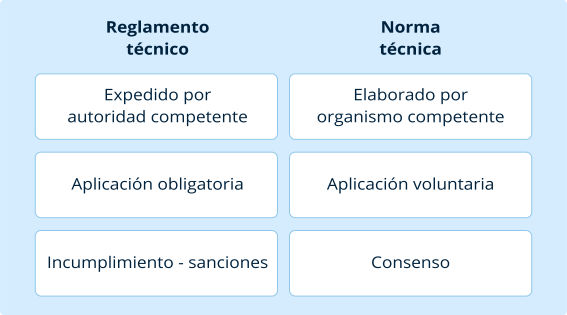Las normas tienen los siguientes niveles de acuerdo a su alcance geográfico:
- Internacional: pueden participar organismos de normalización de todos los países. Pertenecen ISO, IEC, IEEE, UIT, OIML.
- Regional: participan organismos de un área geográfica, política o económica del mundo. Ejemplo: CEN (Europa), COPANT (América).
- Nacional: tiene lugar en un país específico. Ejemplo: ICONTEC (Colombia), DIN (Alemania), ANSI (Estados Unidos).
- Territorial: tiene lugar en una división territorial de un país.
Niveles de normalización
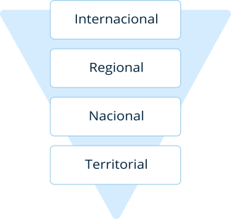1.2 Marco colombiano
El organismo encargado de los reglamentos técnicos relacionado al sector minero energético es el Ministerio de Minas y Energía (MinMinas), estos tienen rigor y vigencia en todo el territorio nacional.
El organismo encargado de las normas técnicas colombianas es el Instituto Colombiano de Normas Técnicas (ICONTEC), el cual, fue nombrado asesor del gobierno nacional con los decretos 767 de 1964 y 2416 de 1971, y reconocido por el gobierno como organismo nacional de normalización mediante decreto 1595 de 2015 y otros decretos preliminares.
Reglamento Técnico de Instalaciones Eléctricas - RETIE
MinMinas expidió la Resolución 90708 por la cual se expide el nuevo Reglamento Técnico de Instalaciones Eléctricas – RETIE el 30 de agosto de 2013. Adicionalmente, por medio de las Resoluciones 90907 de 2013, 90795 de 2014, 40492 de 2015, 40157 de 2017 y 40259 de 2017 se modifican y aclaran algunos artículos del Anexo General de la Resolución 90708 de 2013 y por medio de la resolución 40908 de 2018 decide la permanencia del reglamento de acuerdo a lo estipulado en el Diario Oficial.
Resumen histórico RETIE
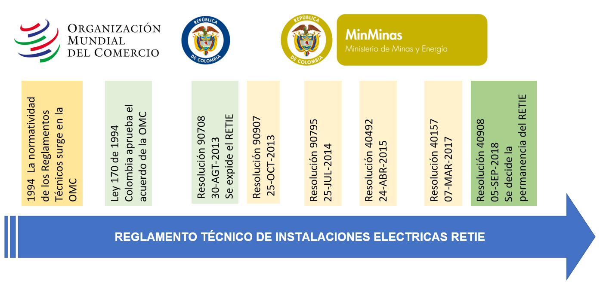El artículo 1 del RETIE establece que su objeto fundamental es establecer las medidas para prevenir, minimizar o eliminar los riesgos de origen eléctrico; sin prejuicio del cumplimiento de las reglamentaciones civiles, mecánicas y de fabricación de equipos; para que se cumpla con los siguientes objetivos:
|
La protección de la vida y la salud humana. |
|
|
La protección de la vida animal y vegetal. |
|
|
La preservación del medio ambiente. |
|
|
La prevención de prácticas que puedan inducir a error al usuario. |
El campo de aplicación del RETIE involucra a las instalaciones eléctricas, los productos utilizados en ellas, y las personas que intervienen, dentro de un marco de conformidad de cumplimiento establecido en este mismo reglamento.
- Se debe garantizar el cumplimiento del RETIE en toda instalación nueva, así como en las ampliaciones y remodelaciones de las instalaciones existentes; las cuales deben demostrar la conformidad mediante un certificado expedido por un ente certificador de las instalaciones avalado por el Organismo Nacional de Acreditación de Colombia (ONAC).
- Los productos usados en las instalaciones eléctricas, que estén listados en la tabla 2.1 del RETIE deben demostrar la conformidad mediante un certificado de conformidad de producto expedido por un organismo de certificación acreditado por el ONAC.
- El diseño, la construcción, ampliación o remodelación de toda instalación eléctrica debe ser dirigida, supervisada y ejecutada directamente por profesionales competentes, que estén facultados por la ley y que cumplan con todos los requisitos aplicables del RETIE. Deben demostrar su conformidad con su respectiva licencia acorde con el marco de aplicación: matrícula profesional o certificación expedida por el Consejo Nacional de Técnicos Electricistas (CONTE). Artículo 2. RETIE.
Campo de acción RETIE
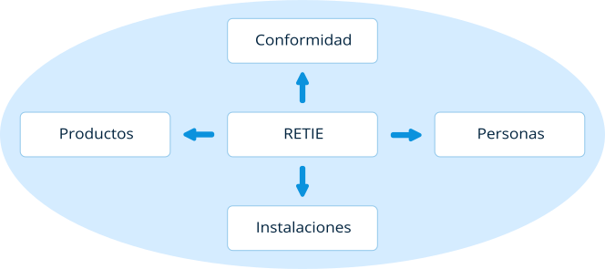El RETIE abarca todos los procesos asociados al uso de la energía eléctrica:
- Proceso de generación (capítulo 4).
- Proceso de transmisión (capítulo 5).
- Proceso de transformación (capítulo 6).
- Proceso de distribución (capítulo 7).
- Requisitos para uso final (capítulo 8).
Procesos asociados RETIE
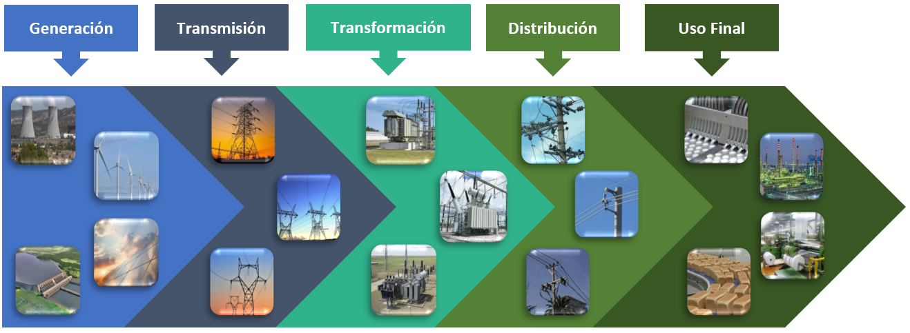NTC 2050
La Norma Técnica Colombiana - NTC 2050 es el código eléctrico colombiano, se basa en la edición de 1996 del NTC americano (National Electrical Code), publicado por la NFPA (National Fire Protection Association) en idioma inglés y traducido en España, de su posterior adaptación se encargó el ICONTEC.
El objetivo de este código es la salvaguardia de las personas y de los bienes contra los riesgos que pueden surgir por el uso de la electricidad. Contiene disposiciones que se consideran necesarias para la seguridad. El cumplimiento de las mismas y el mantenimiento adecuado dan lugar a una instalación prácticamente libre de riesgos, pero no necesariamente eficiente, conveniente o adecuada para el buen servicio o para ampliaciones futuras en el uso de la electricidad. No tiene la intención de marcar especificaciones de diseño, no de ser un manual para personal no calificado.
Contiene 9 capítulos, los capítulos 1 al 4 son de aplicación general, los capítulos 5 al 7 se refieren a lugares, equipos u otras condiciones especiales, el capítulo 8 a comunicaciones y el capítulo 9 consta de tablas y ejemplos.
Organización NTC 2050, sección 90
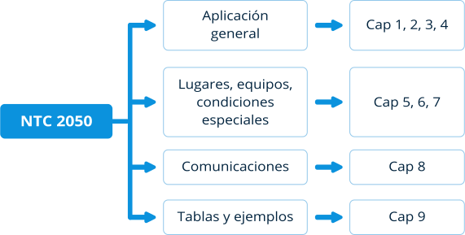NTC IEC34
Norma técnica específica para las máquinas eléctricas rotativas, basada en la norma internacional IEC 60034.
Entre otros temas, la norma cubre los siguientes aspectos de las máquinas rotativas:
- Características nominales y de funcionamiento.
- Grados de protección provistos para el diseño integral de las máquinas rotatorias.
- Métodos de enfriamiento.
- Tipos de construcción, disposiciones de montaje y posición de la caja de terminales.
- Límites de ruido.
- Protección térmica.
- Características de arranque de los motores trifásicos de inducción tipo jaula de ardilla.
- Niveles de rigidez dieléctrica a la tensión de impulso de máquinas de corriente alterna con estator reformado.
- Evaluación de los sistemas de aislamiento.
- Rendimiento de energía en motores eléctricos.
1.3 Marco Internacional
NFPA 70E®. Estándar de seguridad eléctrica en el lugar de trabajo
Esta norma aborda las prácticas laborales relacionadas con la seguridad eléctrica, los requisitos de mantenimiento relacionados con la seguridad y otros controles administrativos para lugares de trabajo, que son necesarios para la protección de los empleados en relación con los peligros asociados con la energía eléctrica durante actividades como instalación, inspección, operación, mantenimiento y desmantelamiento de conductores, equipos, señalización, canalizaciones y comunicaciones. También incluye prácticas laborales seguras para los empleados que realizan otras actividades laborales y que pueden verse expuestos a peligros eléctricos. El mayor riesgo de lesiones por peligros eléctricos para otros trabajadores implica el contacto involuntario con líneas eléctricas aéreas y descargas eléctricas de máquinas, herramientas y electrodomésticos. Artículo 90.
Esta norma fue desarrollada inicialmente por solicitud del Occupational Safety and Health Administration (OSHA), para ayudar a las empresas y empleados a evitar lesiones y muertes en el lugar de trabajo, debido a descargas, electrocución, arco eléctrico y explosiones por arco (NFPA 70E, Pag. 4).
IEC 60034
Estándar para las máquinas eléctricas rotativas desarrollado por la Comisión Electrotécnica Internacional. De la traducción de esta norma sale la NTC IEC34.
Instituto Alemán para la Normalización (DIN) EN 50110-1
“Esta norma es aplicable a todas las operaciones y actividades laborales en, con o cerca de instalaciones eléctricas. Incluye instalaciones diseñadas para la generación, transmisión, transformación, distribución y uso de energía eléctrica. Tanto para instalaciones permanentes y fijas, como temporales y móviles.”
2. Riesgo eléctrico
Es tal vez el más peligroso que puede existir en el desarrollo de una labor, esto se debe a que la corriente no es perceptible al ojo humano, a menos, que esté actuando y su actuación genere estímulos que activen dicha percepción, es por ello, que este tema debe ser estudiado para comprender las situaciones de peligro y letalidad a profundidad.
2.1 Peligro Vs. Riesgo
Es necesario diferenciar peligro de riesgo para poder dejar en claro las diferencias entre estos dos términos que en ocasiones son entendidos como sinónimos pese a que son muy distintos como lo expresa el artículo 3 de RETIE:
| 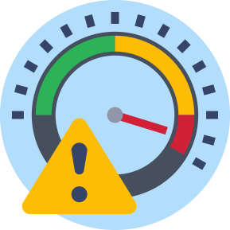 |
Peligro: condición no controlada que tiene el potencial de causar lesiones a personas, daños a instalaciones o afectaciones al medio ambiente. |
| 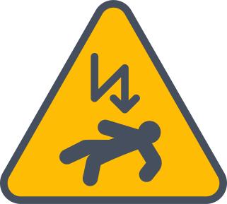 |
Riesgo: probabilidad de que, en una actividad se produzca una pérdida determinada, en un tiempo dado. |
Peligro Vs. Riesgo
La diferencia entre uno y otro es que el peligro es una condición o característica intrínseca que puede causar lesión o enfermedad, daño a la propiedad y/o paralización de un proceso. El riesgo es la combinación de la probabilidad y la consecuencia de no controlar el peligro.
En trabajos con instalaciones eléctricas, el peligro es la electricidad y el riesgo eléctrico es la posibilidad que tiene toda persona que efectúa trabajos, de verse afectado o agredido físicamente por la misma.
Para controlar el peligro y disminuir el riesgo se pueden realizar varias acciones denominadas barreras duras y barreras blandas. Las barreras duras son las más eficaces y deben ser las primeras en evaluarse, aunque en muchas ocasiones son las que mayor inversión requieren.
Barreras duras
- Eliminación: se modifica el diseño para eliminar el peligro, no siempre es posible, y en instalaciones eléctricas no se puede eliminar la electricidad.
- Sustitución: se reemplazan los materiales peligrosos, por materiales menos peligrosos o reducir la energía del sistema.
- Controles de Ingeniería: se deben instalar sistemas para prevenir el riesgo.
Barreras blandas
- Señalar, advertir y controles administrativos: Señalizar las áreas peligrosas, señales luminiscentes, marcas de pasarelas peatonales, marcas distancias de seguridad, procedimientos, etc.
- Equipo de protección personal: Es la menos efectiva de todas, y solamente reducen los efectos en caso de accidente o incidente.
Jerarquía de control de peligro
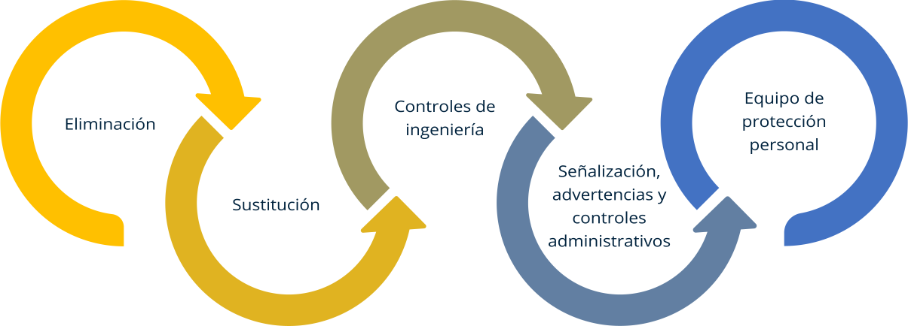Ejemplificación de control de peligro y disminución de riesgo
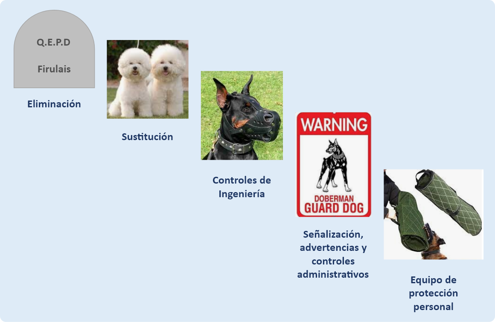2.2 Acciones y condiciones inseguras
En primer lugar, es necesario definir y diferenciar algunos conceptos de acuerdo con el artículo 3 de RETIE:
|
Acto inseguro: violación de una norma de seguridad ya definida. |
|
Condición insegura: circunstancia potencialmente riesgosa que está presente en el ambiente de trabajo. |
Acciones inseguras
Son las violaciones de un procedimiento seguro, algunos ejemplos son:
- Intervenir en equipos energizados sin autorización.
- No utilizar los elementos de protección personal.
- No usar equipos de maniobras o herramientas aptas para uso eléctrico.
- Usar equipos y herramientas en mal estado.
- No respetar la distancia de seguridad.
- Sobrecargar algún punto de la instalación.
- Usar una herramienta pata un trabajo para el cual no está diseñada.
Condiciones inseguras
Son estados de las instalaciones o equipos, existentes en el lugar de trabajo, que se apartan de la norma de diseño seguro.
Por ejemplo:
- Instalaciones aéreas que no cumplen con la distancia de seguridad.
- Aislaciones insuficientes o dañadas.
- Material inadecuado o deficiente.
- Falta de puesta a tierra de seguridad.
- Circuitos sobrecargados.
- Dispositivos de protección inadecuados.
- Falta de protector diferencial.
- Falta de señalización.
- Falta de equipos de protección o seguridad.
- Equipos o accesorios fuera de norma.
Con frecuencia los actos y las condiciones inseguras confluyen, es decir, existe una condición insegura y se lleva a cabo un acto inseguro, uniéndose y teniendo como consecuencia un accidente. El efecto dominó que trae los actos y condiciones inseguras, se refleja en la pirámide de la accidentalidad desarrollada por Frank Bird Jr. y Frank Hernández (1969). La base de la pirámide son los actos y condiciones inseguras.
Pirámide de la accidentalidad
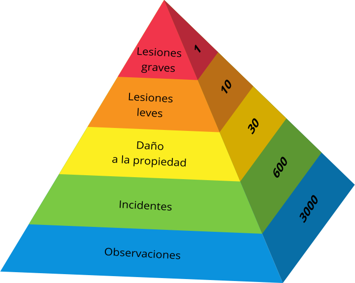2.3 Causas y consecuencias de accidentes eléctricos
Accidente: evento no deseado. Dentro de éstos se incluyen los descuidos y las fallas de los equipos, que tienen como resultado la muerte, una lesión personal, un daño a la propiedad o deterioro ambiental (artículo 3. RETIE).
Causas de accidentalidad: los accidentes de origen eléctrico pueden ser producidos por contactos directos (fase-fase, fase-neutro, fase-tierra), contactos indirectos (inducción, contacto con masa energizada, tensión de paso, tensión de contacto, tensión transferida), impacto de rayo, fulguración, explosión, incendio, sobrecorrientes y sobretensiones (artículo 9. RETIE).
- Contacto directo: se da con partes normalmente activas de la instalación eléctrica, es decir, sin que medie una falla en los equipos.
- Contacto indirecto: se da cuando el contacto se establece con partes de la instalación que se encuentran activas por la ocurrencia de un defecto en los equipos.
- Fulguración: son los efectos biológicos que se producen por acción de la electricidad atmosférica.
Consecuencias: el paso de la corriente por el cuerpo puede ocasionar desde lesiones físicas secundarias (golpes, caídas, entre otros), hasta la muerte.
- Electrización: una persona se electriza cuando la corriente eléctrica circula por su cuerpo, es decir, cuando la persona forma parte del circuito eléctrico, pudiendo, al menos, distinguir dos puntos de contacto: uno de entrada y otro de salida de la corriente.
- Electrocución: se produce cuando una persona fallece debido al paso de la corriente por su cuerpo.
- Fibrilación ventricular: consiste en el movimiento irregular del corazón, el cual, deja de enviar sangre a los distintos órganos y, aunque esté en movimiento, no sigue su ritmo normal de funcionamiento.
- Tetanización: movimiento incontrolado de los músculos como consecuencia del paso de la energía eléctrica. Dependiendo del recorrido de la corriente se pierde el control de las manos, brazos, músculos pectorales, entre otros.
- Asfixia: se produce cuando el paso de la corriente afecta al centro nervioso que regula la función respiratoria, ocasionando un paro respiratorio.
- Otros factores fisiopatológicos: tales como contracciones musculares, aumento de la presión sanguínea, dificultad respiratoria, bloqueo renal y paro temporal del corazón, entre otros; pueden producirse sin fibrilación ventricular. Tales efectos no siempre son mortales, son, normalmente, reversibles y, a menudo, dejan marcas generadas por el paso de la corriente.
- Quemaduras o necrosis eléctrica: se producen por la energía liberada al paso de la corriente o por radiación térmica de un arco eléctrico, cuando son profundas pueden llegar a ser mortales.
- Estado fisiopatológico de shock: presenta efectos circulatorios y respiratorios simultáneamente.
Adaptado de: NTP-400; efectos de la corriente.
Efectos de la corriente sobre la piel
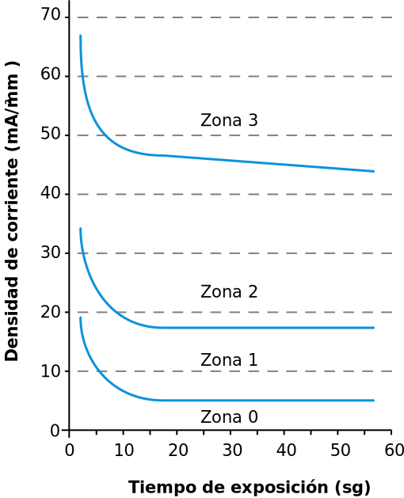Efectos sobre la piel
La curva indica las alteraciones de la piel en función de la densidad de corriente que circula por un área determinada (mA/mm2) y el tiempo de exposición a esa corriente.
- Zona 0: habitualmente no hay alteración de la piel, salvo que el tiempo de exposición sea de varios segundos, en cuyo caso, la piel en contacto con el electrodo puede tomar un color grisáceo con superficie rugosa.
- Zona 1: se produce un enrojecimiento de la piel con una hinchazón en los bordes donde estaba situado el electrodo.
- Zona 2: se provoca una coloración parda de la piel que estaba situada bajo el electrodo. Si la duración es de varias decenas de segundos se produce una clara hinchazón alrededor del electrodo.
- Zona 4: se puede provocar una carbonización de la piel. Es importante resaltar que con una intensidad elevada y cuando las superficies de contacto son importantes se puede llegar a la fibrilación ventricular sin ninguna alteración de la piel.
Factores que influyen en el efecto de la corriente alterna en el organismo: el paso de la corriente por el cuerpo genera efectos que pueden ser distintos de una persona a otra dependiendo de su constitución física y su estado de salud, entre otros factores. En general, y para efectos de cálculos se considera que el cuerpo humano es un buen conductor de la electricidad, y se ha normalizado su resistencia en 1000 amperios (Ω). Y dependiendo de la cantidad de corriente se establecen umbrales cuyos valores están dados en referencia a este valor de resistencia estándar.
- Umbral de percepción: valor mínimo de la corriente que provoca una sensación en una persona. En corriente alterna esta sensación de paso de corriente se percibe durante todo el tiempo; sin embargo, con corriente continua solo se percibe cuando varía la intensidad, por ello son fundamentales el inicio y la interrupción de paso de la corriente. La Norma CEI 479-11994 considera un valor de 0,5 miliamperios (mA) en corriente alterna y 2 mA en corriente continua. El RETIE considera una corriente de (1,1 mA).
- Umbral de reacción: valor mínimo de la corriente que provoca una contracción muscular.
- Umbral de no soltar: cuando una persona tiene sujetos unos electrodos, es el valor máximo de la corriente que permite a esa persona soltarlos. En corriente alterna se considera un valor máximo de 10 mA.
- Umbral de fibrilación ventricular: valor mínimo de la corriente que puede provocar la fibrilación ventricular. En corriente alterna, decrece considerablemente si la duración del paso de la corriente se prolonga más allá de un ciclo cardíaco. La fibrilación ventricular está considerada como la causa principal de muerte por choque eléctrico.
Fuente: NTP-400; Seguridad eléctrica efectos sobre el cuerpo humano.
Efectos de la corriente sobre la piel
| Intensidad | Efectos fisiológicos que se observan en condiciones normales |
|---|---|
| 0 - 0,5 mA | No se observan sensaciones ni efectos. El umbral de percepción se sitúa en 0,5 mA. |
| 0,5 - 10 mA | Calambres y movimientos reflejos musculares. El umbral de no soltar se sitúa en 10 mA. |
| 10 - 25 mA | Contracciones musculares. Agarrotamiento de brazos y piernas con dificultad de soltar objetos. Aumento de la presión arterial y dificultades respiratorias. |
| 25 - 40 mA | Fuerte tetanización. Irregularidades cardiacas. Quemaduras. Asfixia a partir de 4 s. |
| 40 - 100 mA | Efectos anteriores con mayor intensidad y gravedad. Fibrilación y arritmias cardiacas. |
| ~ 1 A | Fibrilación y paro cardíaco. Quemaduras muy graves. Alto riesgo de muerte. |
| 1 - 5 A | Quemaduras muy graves. Parada cardiaca con elevada probabilidad de muerte. |
La figura dada por la NTC4120, referente IEC 60479-2 indica los efectos que produce una corriente alterna en frecuencia entre 15 y 100 hercios (Hz) en un recorrido desde la mano izquierda hasta los dos pies.
Zonas de tiempo/corriente de los efectos de la corriente alterna
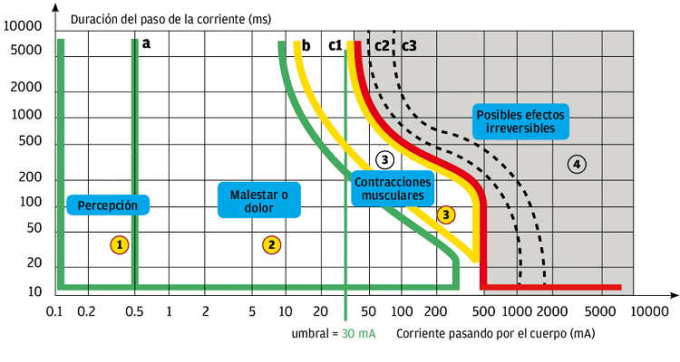Medidas de prevención de accidentes eléctricos
Para prevenir accidentes eléctricos es necesario:
|
Aprobación de autoridad competente: equipos, herramientas, materiales e instalaciones. |
|
Mantenimiento preventivo: inspección, revisión y mantenimiento. |
|
Cumplimiento de normas: capacitación formal, reentrenamiento y procedimientos. |
|
Uso de los elementos de protección personal (EPP). |
|
Realización de trabajos únicamente por personal calificado y certificado. |
2.4 Arco eléctrico
Arco eléctrico: haz luminoso producido por el flujo de corriente eléctrica a través de un medio aislante, que produce radiación y gases calientes (artículo 3; RETIE).
Es el paso sustancial de energía a través del aire ionizado, las etapas se dividen en tres: ráfaga, temperatura y choque eléctrico.
Los arcos eléctricos se presentan cuando se realizan movimientos físicos en equipos, tales como:
- Cierre y apertura de interruptores.
- Apertura y cierre de puertas y cubiertas.
- Inserción y retiro de equipos.
- Instalaciones de equipos de prueba y tierras de seguridad.
- Mantenimiento y mediciones en el sistema.
- Es muy extraño que se presenten durante la operación normal.
Características:
- Típicamente duran menos de un segundo.
- Radiación de energía a temperaturas extremadamente altas.
- Explosivos por naturaleza.
- Pueden encender/derretir la vestimenta convencional.
Un arco eléctrico libera diversos tipos de energía concentrada, convirtiéndose en gas, vapor (plasma) del material del terminal del equipo por lo general cobre y/o aluminio.
Energía liberada por un arco eléctrico
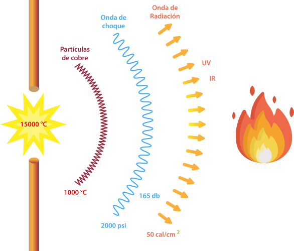2.5 Las cinco (5) reglas de oro
Las 5 reglas de oro se utilizan para trabajos eléctricos en frío, es decir en sistemas desenergizados.
De acuerdo con el artículo 18.1 del RETIE, los trabajos que deban desarrollarse con las redes o equipos desenergizados, deben cumplir las 5 reglas de oro:
Regla No 1. Efectuar corte visible de todas las fuentes de tensión. Con el fin de anular todas las fuentes de tensión que puedan alimentar la instalación en la que se operará, debe efectuarse la apertura de los circuitos de cada uno de los conductores.
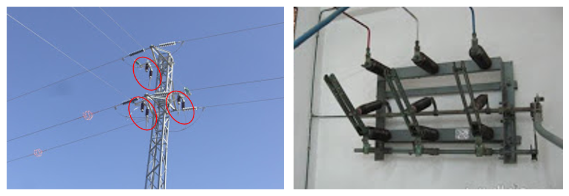Regla No 2. Condenación o bloqueo y etiquetado. Se bloquearán los aparatos de corte en posición de apertura, colocando a la vez, una señalización de prohibición de maniobras.
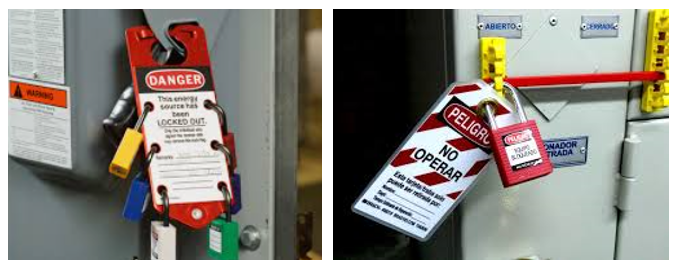Regla No 3. Verificar ausencia de tensión en cada una de las fases. Se comprobará mediante los medios adecuados a los distintos niveles de tensión, la ausencia de la misma, lo más cerca posible al punto de corte y cada uno de los conductores.
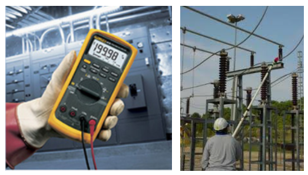Regla No 4. Puesta a tierra y en cortocircuito de todas las posibles fuentes de tensión. Luego de efectuada la descarga de la instalación, la misma se colocará a tierra y en cortocircuito, lo más cerca posible del lugar de trabajo, y en cada uno de los conductores sin tensión, incluyendo al neutro.
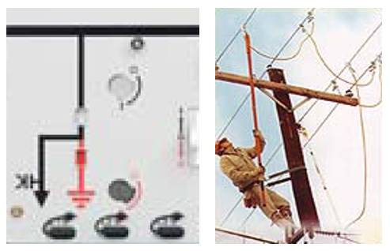Regla No 5. Señalizar y delimitar la zona de trabajo. Debe señalizarse la zona de trabajo en forma adecuada, con el objeto de evitar errores en su identificación y no penetrar en zonas colindantes con tensión.
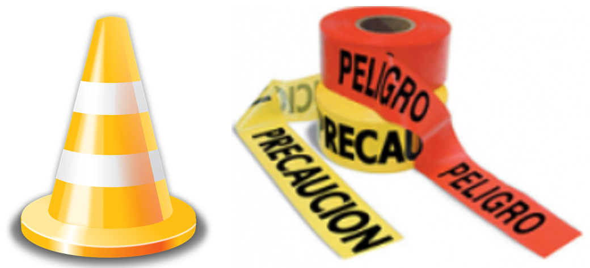2.6 Trabajos en tensión o con redes energizadas
Se consideran trabajos eléctricos en caliente, porque el trabajo se realiza sobre sistemas energizados o sobre equipos que pueden llegar a generar tensión (ejemplo: trabajo con motores de imán permanente PMM).
Los métodos comúnmente utilizados son:
- Trabajo a distancia: se ejecutan trabajos con herramientas montadas en pértigas aislantes.
- Trabajos a contacto: el operario se aísla por medio de elementos de protección personal, dispositivos y equipos aislantes.
- Trabajo a potencial: el operario queda al potencial de la línea de transmisión sobre la que trabaja, mediante vestuario conductivo.
El artículo 19 de RETIE establece las siguientes reglas principales para trabajos en tensión:
- Todo trabajo a tensión se debe realizar aplicando un procedimiento detallado paso a paso, materiales y equipos de protección personal, croquis y dibujos (planos) necesarios; además dicho trabajo debe ser previamente estudiado y analizado por todos los involucrados en su ejecución.
- Todo trabajo eléctrico en caliente en sistemas de más de 450 voltios (V) debe hacerse con un mínimo de dos (2) personas.
- Toda persona que realice trabajos en caliente, debe estar capacitado y habilitado, lo cual debe ser demostrado mediante certificación.
- Ningún operario podrá participar en un trabajo en tensión si no dispone de todos sus elementos de protección personal, acordes con la tarea a realizar.
- Los guantes aislantes deben ser sometidos a una prueba de porosidad por inyección de aire, antes de cada jornada de trabajo; también es necesario hacer un ensayo de rigidez dieléctrica en laboratorio al menos dos veces al año. Durante el trabajo los guantes aislantes deben estar revestidos con guantes de protección mecánica y guantes de algodón en su interior.
Para trabajos con motores de imán permanente (PMM), adicional a las normas dadas en el RETIE, se deben instalar barreras de protección mecánica que eviten el giro del motor.
2.7 Equipos de Protección Personal (EPP)
Son todo equipo, aparato o dispositivo especialmente proyectado y fabricado para preservar el cuerpo humano, en todo o en parte, de riesgos específicos de accidentes del trabajo o enfermedades profesionales.
Ministerio de Salud; 2017.
En seguridad eléctrica, los EPP varían en función de los trabajos que se realizan en baja, en media y alta tensión.
|
Casco con propiedades dieléctricas: deben llevar su respectivo barbuquejo para evitar la caída del casco durante la realización de los trabajos. Los cascos deben cumplir las exigencias de la norma EN 397 o de la EN 443. El casco debe estar marcado, según UNE-EN 50365:2003, la clase eléctrica a la que corresponde. |
|
Protector facial y ocular: la protección de los ojos contra un arco eléctrico de cortocircuito es una exigencia que contempla la norma EN 166:2002. Las pantallas faciales certificadas según UNE-EN 166:2002 son los únicos protectores oculares válidos para esta zona del cuerpo, además incluyen la exigencia de protección contra arco eléctrico de cortocircuito. |
|
Ropa de protección: dependiendo del tipo de trabajo a realizar se tiene diferente tipo de ropa de protección, cuyas prendas deben cumplir la norma correspondiente: |
|
UNE-EN 50286:2000. Prendas aislantes de protección en trabajos con instalaciones de baja tensión, destinada a ser empleada por electricistas cualificados que se encuentren, próximos a instalaciones con tensiones nominales inferiores a 500V en corriente alterna o 750V en corriente continua. |
|
UNE-EN 60985:2005. Ropa conductora para trabajos en tensión, para ser empleada por electricistas cualificados en tensiones nominales inferiores a 800 kilovoltios (kV) en corriente alterna o ±600 kV en corriente continua. |
|
Ropa de protección contra los efectos producidos por el arco eléctrico. Esta prenda no protege contra el arco eléctrico, sino contra las altas temperaturas que se generan y que pueden ocasionar quemaduras importantes. |
Los operarios que realicen trabajos en sistemas energizados deben utilizar equipos de protección que no deben tener nivel un de protección menor al establecido por la NFPA 70E en la siguiente tabla:
Nivel mínimo de protección térmica
| Categoría | Nivel mínimo de protección Cal/cm² |
|---|---|
| 0 | Prenda normal de algodón |
| 1 | 4 |
| 2 | 8 |
| 3 | 25 |
| 4 | 40 |
- Calzado con propiedades dieléctricas.
- Mangas adicionales para prevenir la inflamación de la ropa de trabajo ante contactos accidentales con elementos en tensión. UNE-EN 60984:1995.
- Guantes dieléctricos, de material aislante que confieren protección eléctrica. Existen 6 tipos de guantes que se clasifican en función de la tensión a la que son sometidos. La UNE-EN 60903:2005 recomienda el tipo de guantes a emplear según la tensión máxima de utilización, para facilidad del usuario, se clasifican por color y clase:
- Beige-00 500VAC / 750VDC; Rojo-0 1000VAC / 1500VDC.
- Blanco-1 7500VAC / 11250VDC.
- Amarillo-2 17000VAC / 25500VDC.
- Verde-3 26500VAC / 39750VDC.
- Naranja-4 36000VAC / 54000VDC.
La diferencia entre los distintos tipos de guantes radica en la longitud, espesor del guante, tensión de prueba y tensiones máximas de utilización.
Se recomienda la utilización de protectores de cuero para proteger los guantes dieléctricos de daños durante su utilización.
Algunos guantes disponen de propiedades especiales, que son necesarios en ciertos trabajos, y se clasifican mediante letras así:
- A: Resistentes al ácido.
- H: Resistente al aceite.
- Z: Resistente al ozono.
- R: Resistente al ácido, al aceite y ozono.
- C: Resistencia a muy bajas temperaturas.
- Tapete dieléctrico: utilizado para aislar al operario del piso en el lugar donde va a realizar los trabajos.
La EC 61111 define las diferentes clases según la tensión de trabajo.
Tabla de etiquetado de EPP ASTM
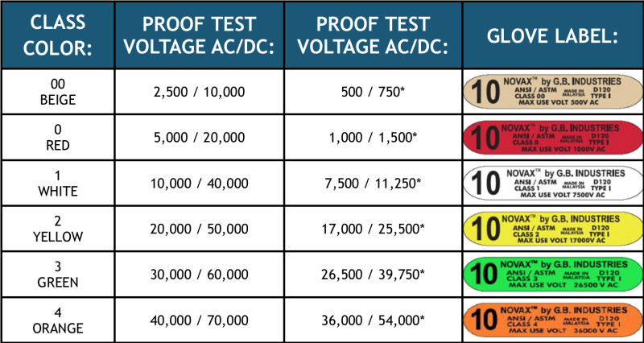Importante: Los EPP se deben revisar antes de cada servicio y se deben certificar de acuerdo con la norma correspondiente para cada elemento.
Elementos de protección personal básicos
(Sin peligro de arco eléctrico)
Zonas de tránsito y frente a equipos que estén con puertas cerradas:
- Ropa interior de algodón no tratado.
- Overol o camisa manga larga y pantalón.
- Casco dieléctrico clase E.
- Gafas de seguridad.
- Botas de cuero dieléctricas.
Categoría 1 (entre 0 y 4 Cal/cm²) y
Categoría 2 (entre 0 y 8 Cal/cm²)
Zonas donde el personal electricista autorizado realiza trabajos:
- Ropa interior de algodón no tratado.
- Overol resistente al arco eléctrico mínimo de 8 cal/cm².
- Capucha resistente al arco eléctrico mínimo de 8 cal/cm².
- Protector facial mínimo de 8 cal/cm².
- Casco dieléctrico clase E.
- Gafas de cuero dieléctricas.
- Protector auditivo de inserción.
- Guantes dieléctricos de acuerdo al nivel de tensión con su guante protector de cuero.
Categoría 3 (entre 8 y 25 Cal/cm²) y
Categoría 4 (entre 25 y 40 Cal/cm²)
Zonas donde el personal electricista autorizado realiza trabajos:
- Ropa interior de algodón no tratado.
- Traje resistente al arco eléctrico entre 25 y 40 cal/cm² de acuerdo al equipo en donde va a trabajo.
- Capucha resistente al arco eléctrico de 40 cal/cm².
- Protector facial de 40 cal/cm².
- Casco dieléctrico clase E.
- Gafas de seguridad.
- Botas de cuero dieléctricas.
- Protector auditivo de inserción.
- Guantes dieléctricos de acuerdo al nivel de tensión con su guante protector de cuero.
2.8 Puestas a tierra
Toda instalación eléctrica debe disponer de un sistema de puesta a tierra para evitar que las personas queden sometidas a tensiones de paso, de contacto o transferidas, que superen los umbrales de soportabilidad del ser humano cuando se presente una falla (artículo 15; RETIE). Los sistemas de conexión a tierra se instalan para proteger al personal, al equipo y a los edificios de fallas de conexión a tierra no deseadas y peligrosas (NEC®; artículo 250).
- Sistema de Puesta a Tierra (SPT)
Conjunto de elementos conductores de un sistema eléctrico específico, sin dispositivos de interrupción, que conectan los equipos eléctricos con el terreno o una masa metálica. Comprende la puesta a tierra y la red equipotencial. - Puesta a Tierra (PT)
Grupo de elementos conductores equipotenciales, en contacto eléctrico con el suelo o una masa metálica de referencia común, que distribuye las corrientes eléctricas de falla en el suelo o en la masa. Comprende electrodos, conexiones y cables enterrados. - Poner a tierra
Realizar una conexión eléctrica entre un nodo de una instalación eléctrica y el suelo o terreno. Puede ser intencional o accidental y permanente o temporal. - Suelo artificial
Compuesto preparado industrialmente de baja resistividad, para potenciar la conductividad de un electrodo enterrado. - Tierra
Masa conductiva de la tierra con potencial cero. - Tipos de STP
Permanentes: para sistemas eléctricos (de subestación, de alta frecuencia, de corriente continua, de equipos de comunicaciones, de estática, de pararrayos, de protección catódica).
Temporales: para trabajos de mantenimiento (de baja tensión, de media tensión, de alta tensión, de electricidad estática, para cargue y descargue de combustibles, para equipos móviles).
Tipos de Sistemas de Puesta a Tierra (SPT)
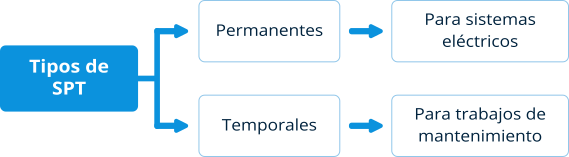Componentes Básicos de un SPT
- Barraje de tierra aislada.
- Barraje de tierra de protección.
- Barraje de neutro.
- Conductor a tierra.
- Conductor aislado de puesta a tierra de equipos.
- Conductor neutro.
- Conductor de protección.
- Electrodos de puesta a tierra.
- Malla de puesta a tierra.
- Puente de conexión equipotencial.
- Puesta a tierra.
- Suelo o terreno.
Componentes de un Sistema de Puesta a Tierra
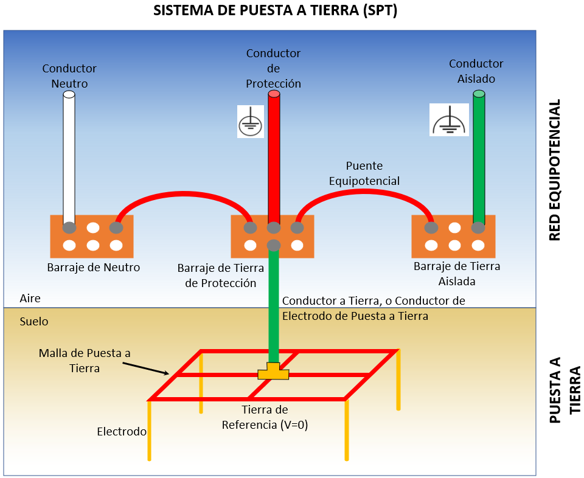2.9 Tensión de paso y tensión de contacto
Ahora bien, también es importante en este punto diferenciar la tensión de paso de la tensión de contacto acordes con el artículo 3 del RETIE:
Tensión de paso: es la diferencia de tensión que durante una falla se presenta entre dos puntos de la superficie del terreno, separados por una distancia de un paso (aproximadamente un metro).
Tensión de paso y su consecuencia
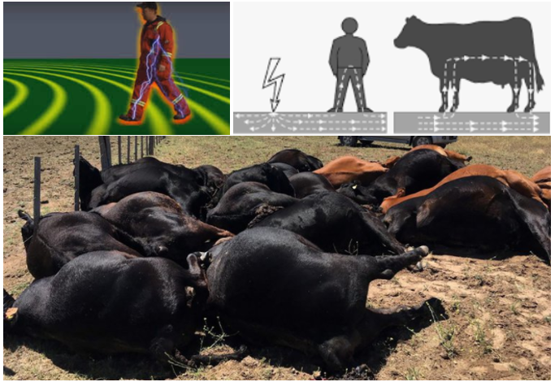Tensión de contacto: es la diferencia de tensión que durante una falla se presenta entre una estructura metálica puesta a tierra y un punto de la superficie del terreno a una distancia de un metro.
Tensión de contacto
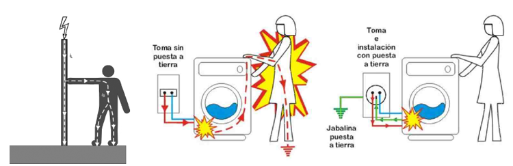Las tensiones de paso y de contacto deben ser consideradas prioritarias para la seguridad y darles esta importancia cuando se realiza el diseño de los sistemas de puesta a tierra, y se constituyen en las limitaciones fundamentales del diseño para garantizar la seguridad de los seres humanos y los animales (Casas, 2017).
2.10 Distancias de seguridad
El artículo 13 del RETIE indica que frente al riesgo eléctrico la técnica más efectiva de prevención siempre será guardar una distancia respecto a las partes energizadas, puesto que el aire es un excelente aislante. El reglamento, fija las distancias mínimas que deben guardarse entre líneas o redes eléctricas y elementos físicos con el objeto de evitar contactos accidentales. Las distancias se adoptaron de la norma ANSI C2.
En el capítulo 13 del RETIE se encuentran las tablas de distancias mínimas de seguridad que aplican para:
- Zonas con construcciones.
- Diferentes lugares y situaciones, como cruces de vías, cruces con ferrocarriles y ríos, zonas de bosques, entre otras.
- Entre conductores en la misma estructura, tanto vertical como horizontal.
- Distancias mínimas para trabajos en o cerca de partes energizadas.
La protección de la frontera con el riesgo de arco eléctrico es la distancia a la que es probable que una persona pueda recibir quemaduras de segundo grado.
Distancias de seguridad
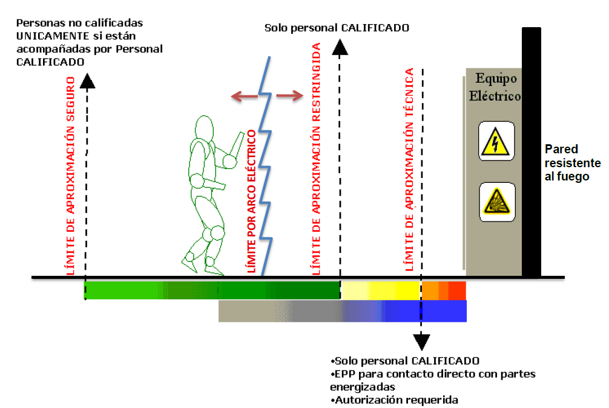3. Análisis de riesgos
Los capítulos 3 y 9 del RETIE suministran información que facilitan el análisis de los riesgos así: una instalación eléctrica es considerada como de peligro inminente o de alto riesgo, cuando carece de medidas de protección adecuadas para prevenir un compromiso con la salud o la vida de las personas.
Los factores de riesgos posibles a ser evaluados son:
- Arco eléctrico: haz luminoso producido por el flujo de corriente eléctrica a través de un medio aislante que produce radiación y gases calientes.
- Contacto directo: es el contacto de personas o animales con conductores activos o partes energizadas de una instalación eléctrica.
- Contacto indirecto: es el contacto de personas o animales con elementos o partes conductivas que normalmente no se encuentran energizadas, pero que en condiciones de falla de los aislamientos se pueden energizar.
- Equipo defectuoso: se presenta cuando se realiza un mal mantenimiento, se tiene una instalación inapropiada, se hace una mala utilización, se sobrepasa el tiempo de uso o vida útil y se efectúa un transporte inadecuado de un equipo.
- Cortocircuito: unión de muy baja resistencia entre dos o más puntos de diferente potencial del mismo circuito.
- Electricidad estática: es una forma de energía eléctrica o el estudio de cargas eléctricas en reposo.
- Ausencia de electricidad (en determinados casos): se da cuando se presentan apagones, cortes de servicio, cuando no se dispone de un sistema ininterrumpido de potencia (UPS) o plantas de emergencia, también cuando no se tiene transferencia.
- Sobrecargas: funcionamiento de un elemento excediendo su capacidad nominal.
- Rayos: es un fenómeno físico que se caracteriza por una transferencia de carga eléctrica de una nube hacia la tierra, de la tierra hacia la nube, entre dos nubes, al interior de una nube o de la nube hacia la ionósfera. Es la descarga eléctrica atmosférica.
- Tensión de contacto: diferencia de potencial que durante una falla se presenta entre una estructura metálica puesta a tierra y un punto de la superficie del terreno a una distancia de un metro. Esta distancia horizontal equivale a la máxima que se puede alcanzar al extender un brazo.
- Tensión de paso: diferencia de potencial que durante una falla se presenta entre dos puntos de la superficie del terreno, separados por una distancia de un paso (aproximadamente un metro).

Factores de riesgo
Arco eléctricoPosibles causas: malos contactos, cortocircuitos, aperturas de interruptores con carga, apertura o cierre de seccionadores con carga , apertura de transformadores de corriente, apertura de transformadores de potencia con carga si utilizar equipo extintor de arco, apertura de transformadores de corriente en secundarios con carga, manipulación indebida de equipos de medida, materiales o herramientas olvidadas en gabinetes, acumulación de óxido o partículas conductoras, descuidos en los trabajos de mantenimiento. Medidas de protección: utilizar materiales envolventes resistentes a los arcos, mantener una distancia de seguridad, usar prendas acordes con el riesgo y gafas de protección contra rayos ultravioleta. |
Ausencia de electricidad (en determinados casos)Posibles causas: apagón o corte del servicio, no disponer de un sistema interrumpido de potencia - UPS, no tener plantas de emergencia, no tener transferencia. Por ejemplo: Lugares donde se exijan plantas de emergencia como hospitales y aeropuertos. Medidas de protección: disponer de sistemas interrumpidos de potencia y de plantas de emergencia con transferencia automática. |
Contacto directoPosibles causas: negligencia de Técnicos o impericia de no Tecnicos, violación de las distancias mínimas de seguridad. Medidas de protección: establecer distancias de seguridad, interposición de obstáculos, aislamiento o recubrimiento de partes activas, utilización de interruptores diferenciales, elementos de protección personal, puesta a tierra, probar ausencia de tensión, doble aislamiento. |
Contacto indirectoPosibles causas: fallas de aislamiento, mal mantenimiento, falta de conductor de puesta a tierra. Medidas de protección: separación de circuitos, uso de muy baja tensión, distancias de seguridad, conexiones equipotenciales, sistemas de puesta a tierra, interruptores diferenciales, mantenimiento preventivo y correctivo. |
CortocircuitoPosibles causas: fallas de aislamiento, impericia de los técnicos, accidentes externos, vientos fuertes, humedades, equipos defectuosos. Medidas de protección: interruptores automáticos con dispositivos de disparo de máxima corriente o cortacircuitos fusibles. |
CortocircuitoPosibles causas: fallas de aislamiento, impericia de los técnicos, accidentes externos, vientos fuertes, humedades, equipos defectuosos. Medidas de protección: interruptores automáticos con dispositivos de disparo de máxima corriente o cortacircuitos fusibles. |
Electricidad estáticaPosibles causas: union y separación constante de materiales como aislantes, conductores, sólidos o gases con la presencia de un aislante. Medidas de protección: sistema de puesta a tierra, conexiones equipotenciales, aumento de la humedad relativa, ionización del ambiente, eleiminadores eléctricos y radiactivos, pisos conductivos. |
Equipo defectuosoPosibles causas: mal mantenimiento, mala instalación, mala utilización, tiempo de uso, transporte inadecuado. Medidas de protección: mantenimiento predictivo, y preventivo, construcción de instalaciones siguiendo las normas técnicas, caracterización del entorno electromagnético. |
RayosPosibles causas: fallas en el diseño, construcción, operación, mantenimiento del sistema de protección. Medidas de protección: pararrayos, bajantes, puestas a tierra, equipotencialización, apantallamientos, topología de cableados. Además suspender actividades de alto riesgo, cuando se tenga personal al aire libre. |
SobrecargaPosibles causas: superar los límites nominales de los equipos o de los conductores, instalaciones que no cumplen las normas técnicas, conexiones flojas, armónicos, no controlar el factor de potencia. Medidas de protección: uso de interruptores automáticos con relés de sobrecarga, interruptores automáticos asociados con cortacircuitos, cortacircuitos, fusibles bien dimensionados, dimensionamiento técnico de conductores y equipos, compensación de energía reactiva con banco de condensadores. |
Tensión de contactoPosibles causas: rayos, fallas a tierra, fallas de aislamiento, violación de distancias de seguridad. Medidas de protección: puesta a tierra de baja resistencia, restricción de acceso, alta resisitividad del piso, equipotencializar. |
Tensión de pasoPosibles causas: rayos, fallas a tierra, fallas de aislamiento, violación de áreas restringidas, retardo en el despeje de la falla. Medidas de protección: puesta a tierra de baja resistencia, restricción de acceso, alta resisitividad del piso, equipotencializar. |
3.1 Matriz de Riesgos
La matriz de análisis de riesgos permite evaluar el nivel o grado de riesgo eléctrico de una instalación o de un trabajo, con el fin de realizar una toma de decisiones adecuadas para el control del riesgo en cada caso.
De acuerdo con el RETIE (artículo 9) y el Procedimiento HSE de Seguridad Eléctrica, para la elaboración de la matriz se deben tener en cuenta los siguientes lineamientos:
- Reconocimiento del riesgo:
Se debe evaluar cada uno de los riesgos asociados a una instalación y evaluar el riesgo en cada paso del procedimiento del trabajo a realizar; al finalizar la evaluación se debe considerar el caso más crítico y este será el nivel de riesgo dado. - Identificar situaciones de riesgo:
Se debe realizar una tabla de las acciones a realizar para poder eliminar, controlar, o mitigar el riesgo y realizar el análisis de la matriz de riesgos una vez realizadas dichas acciones. - Evaluar consecuencias (filas):
En las filas de la matriz se evalúan las consecuencias del evento o efecto causado por un factor de riesgo en una fuente o sitio de trabajo, en las personas, en pérdidas económicas, en el ambiente y en la imagen de la empresa. - Evaluar frecuencia (columnas):
En las columnas de la matriz se evalúa la frecuencia de ocurrencia de acuerdo a las estadísticas de la empresa y/o el sector. - Clasificación del riesgo:
El riesgo se clasifica en muy bajo, bajo, medio, alto o muy alto; dependiendo del cruce entre las consecuencias y la frecuencia de ocurrencia.
Matriz para análisis de riesgo
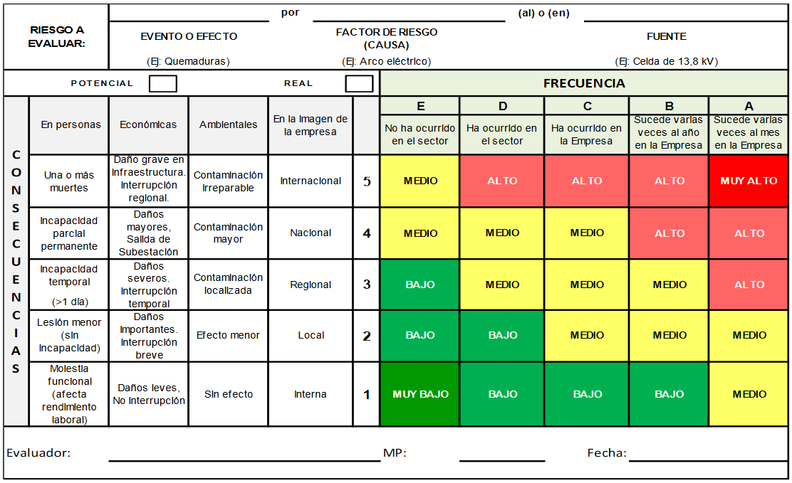Decisiones y acciones para controlar el riesgo
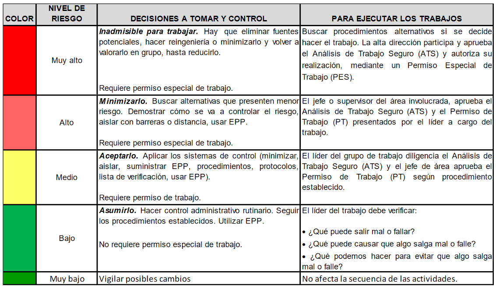4. Análisis de trabajo seguro
Es una metodología utilizada para analizar los riesgos durante una actividad laboral, detallando cada una de las actividades de un procedimiento o paso a paso y evaluando los peligros y riesgos que se presentan en cada uno de ellos, con el fin de encontrar la forma más segura y efectiva de realizar cada actividad.
Para lograr el objetivo, se deben tabular los siguientes ítems:
- Pasos o actividades a ejecutar.
- Peligros asociados a cada actividad.
- Valoración del riesgo a cada paso.
- Controles a tomar para eliminar, reducir, o mitigar el riesgo.
4.1 Análisis previo a actividades
El Análisis de Trabajo Seguro (ATS) debe ser realizado desde la planeación de cada uno de los trabajos a realizar, considerando los diferentes aspectos a tener en consideración de lo estándar de la actividad y previendo lo que puede ocurrir durante la realización de las los procesos.
Este ATS se debe divulgar a todo el personal involucrado en la realización de las actividades y se debe considerar como una guía base para la prevención de incidentes y accidentes durante la realización de la actividad.
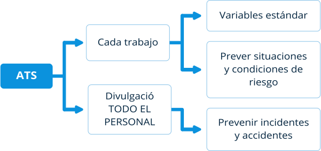4.2 Análisis durante las actividades
Al inicio de la actividad, se debe revisar nuevamente el ATS planificado, y realizar una nueva evaluación en el sitio para verificar que las condiciones evaluadas se cumplan y ajustar aquellas condiciones que tengan algún cambio propio al lugar de trabajo, así como incluir cualquier condición encontrada y que no se haya considerado previamente. En la revisión de este ATS deben participar todos los involucrados en la realización de las actividades y se debe divulgar al personal que realice un relevo en caso de cambios de turno.
Durante la realización de las actividades cualquier trabajador que detecte una desviación o cambio de condiciones (ejemplo: cambio de las condiciones atmosféricas, de visibilidad, y cualquier otro aspecto que pueda afectar las condiciones del trabajo) puede solicitar la suspensión de las actividades para revisar el ATS y garantizar la seguridad e integridad de las personas, equipos, instalaciones y el medio ambiente.
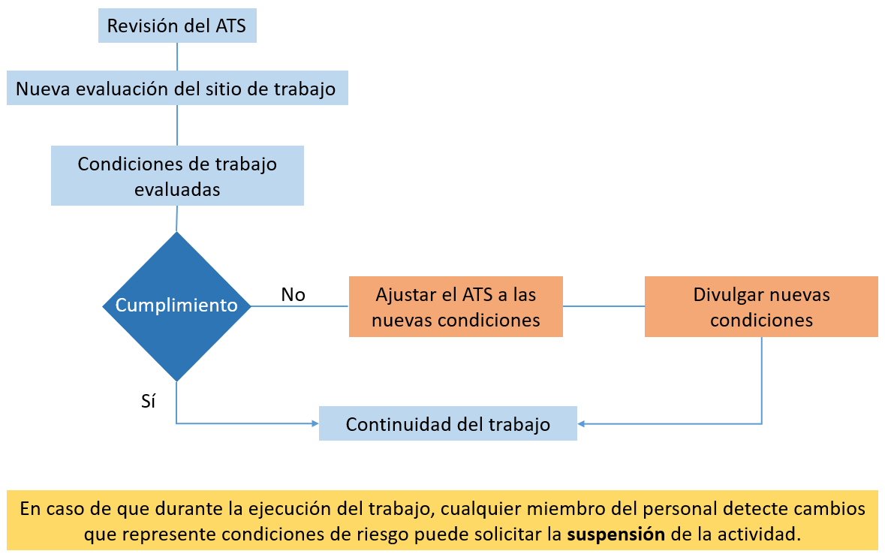Glosario
Aire ionizado:Es una condición en la cual el aire gana o pierde electrones de las moléculas de los gases que lo componen.
Barbuquejo:Cinta que se instala al casco de seguridad para sujetarlo bajo el maxilar inferior de la persona que lo utiliza.
Barreras de protección mecánica:Barreras que se instalan físicamente para evitar el movimiento o giro del eje del motor.
CEN:Comité Europeo de Normalización.
Ciclo cardiaco:Es la secuencia de movimientos que realiza el corazón garantizando el flujo de la sangre a través de sus cavidades para poder bombearla por todo el cuerpo humano.
Conductores:Materiales que permiten el paso de la electricidad.
Contacto directo:Es el contacto de personas o animales con conductores activos o partes energizadas de una instalación eléctrica. RETIE; artículo 3.
Contacto Indirecto:Es el contacto de personas o animales con elementos o partes conductivas que normalmente no se encuentran energizadas. Pero en condiciones de falla de los aislamientos se pueden energizar. RETIE; artículo 3.
Contacto Involuntario:Es el contacto de una persona o animal que no se realiza por voluntad propia con un elemento de una instalación eléctrica.
COPANT:Comisión Panamericana de Normas Técnicas.
Cortocircuito:Sistemas y/o equipos que no se encuentran conectados de manera temporal o permanente a una fuente de energía eléctrica.
Dispositivos de interrupción:Dispositivos colocados en una instalación eléctrica cuya finalidad es realizar el corte del paso de la energía eléctrica hacía un equipo o una parte de un circuito eléctrico.
Efecto dominó:Una fuente de energía eléctrica o el estudio de cargas eléctricas en reposo. RETIE; artículo 3.
Electricidad estática:Es el contacto de una persona o animal que no se realiza por voluntad propia con un elemento de una instalación eléctrica.
Electrocución:Paso de corriente eléctrica a través del cuerpo humano, cuya consecuencia es la muerte. RETIE; artículo 3.
Energizado:Sistemas y/o equipos que se encuentran conectados de manera temporal o permanente a una fuente de energía eléctrica.
Equipos de señalización:Todo tipo de señal, pancarta, aviso, cinta, que se utilice para indicar que existe una situación de riesgo, peligro, o indicación de uso obligatorio de equipos de protección personal en un área.
Equipotencial:Conjunto de sistemas eléctricos, equipos, conductores, etc. que se encuentran al mismo potencial.
Fibrilación muscular:Contracción espontánea e incontrolada de los músculos.
Fuentes de tensión:Todo equipo o sistema que suministre energía eléctrica. También llamados Fuentes de Energía. RETIE; artículo 3.
IEC:Comisión Electrotécnica Internacional.
IEEE:Instituto de Ingeniería Eléctrica y Electrónica.
Inspección:Conjunto de actividades tales como medir, examinar, ensayar o comparar con requisitos establecidos, una o varias características de un producto o instalación eléctrica, para determinar su conformidad. RETIE; artículo 3.
Instalación Eléctrica:Conjunto de los circuitos eléctricos y sus componentes tales como, conductores, equipos, máquinas y aparatos que conforman un sistema eléctrico y que se utilizan para la generación, transmisión, transformación, distribución o uso final de la energía eléctrica. RETIE; artículo 2.1.
ISO:Organización Internacional para la Normalización.
Lesión Física:Perjuicio fisiológico sufrido por una persona. RETIE; artículo 3.
Líneas eléctricas:Conjunto compuesto por conductores, aisladores, estructuras y accesorios destinados al transporte de energía eléctrica. RETIE; artículo 3
Mantenimiento:Conjunto de acciones o procedimientos tendientes a preservar o restablecer un bien, a un estado tal que le permita garantizar la máxima confiabilidad. RETIE; artículo 3.
OIMLOrganización Internacional de Metrología.
Operación:Herramienta aislante compuesta por una o más piezas de forma alargada, normalmente con forma circular que se utiliza para intervenir desde una distancia segura, partes o componentes que se encuentran energizados o pueden llegar a energizarse.
Pértiga aislante:Una fuente de energía eléctrica o el estudio de cargas eléctricas en reposo. RETIE; artículo 3.
Prueba de porosidad:Prueba realizada a guantes dieléctricos para determinar que el guante no tiene desperfectos.
Punto de corte:Es el sitio donde se realiza la interrupción del paso de corriente eléctrica, o desconexión de un equipo o parte de un sistema eléctrico a una fuente de tensión.
Radiación:Energía ondulatoria o partículas materiales que se propagan a través del espacio. (RAE (Real Academia Española))
Red equipotencial:Conjunto de conductores del sistema de puesta a tierra que no están en contacto con el suelo o terreno y que conectan sistemas eléctricos, equipos o instalaciones con la puesta a tierra. (RETIE Artículo 3)
Resistividad:Resistencia eléctrica específica de una determinada sustancia. (RAE)
Tensión:La diferencia de potencial eléctrico entre dos conductores, que hace que fluyan electrones por una resistencia. Tensión es la magnitud, cuya unidad es el voltio; un error frecuente es hablar de “voltaje”. (RETIE Artículo 3)
Umbral de soportabilidad:Nivel de corriente eléctrica que puede soportar el cuerpo humano sin sufrir daño.
UIT:Unión Internacional de Telecomunicaciones.
Vestuario conductivo:Vestuario que se utiliza en trabajos en líneas energizadas de extra alta tensión y que pone al trabajador al mismo potencial que tiene el conductor.
Zonas colindantes:Áreas que se encuentran contiguas entre sí.
Material complementario
| Nombre del documento o material | Tipo de material | Enlace del recurso |
|---|---|---|
| European standards. (2020). Operation of electrical installations General requirements. | Página Web | Ver |
| Escuela Europea de Excelencia (2015, 12 de noviembre). Niveles de control de riesgo según OHSAS 18001 norma para SGSST. | Página Web | Ver |
| Ministerio de Salud y protección Social; Gobierno de Colombia. (2017). Programa de Elementos de Protección Personal, Uso y Mantenimiento. | Documento en línea | Ver |
| Ministerio de trabajo y asuntos sociales -España- & Instituto nacional de seguridad e higiene en el trabajo, (s.f.). NTP 400: Corriente eléctrica: efectos al atravesar el organismo humano. | Página Web | Ver |
| Salisbury by Honeywell. (2015). Protective Rubber Equipment Labeling Chart. | Libro | Ver |
Referencias bibliográficas
Autoridad Nacional de licencias ambientales “ANLA”. (2019). Recordemos que es una ATS - Análisis de Trabajo Seguro.http://portal.anla.gov.co:93/noticias/recordemos-ats-analisis-trabajo-seguro#:~:text=El%20An%C3%A1lisis%20de%20Trabajo%20Seguro,seguras%20y%20efectivas%20de%20ejecutarlas.&text=%2DIdentificaci%C3%B3n%20de%20los%20peligros%20asociados%20con%20cada%20paso
Casas, F. (2017). Tierras-Soporte de la seguridad eléctrica. Sexta Edición. Editorial ICONTEC
ICONTEC. (1998). Código Eléctrico Colombiano – Norma Técnica Colombiana -NTC 2050.https://www.idrd.gov.co/sitio/idrd/sites/default/files/imagenes/ntc%2020500.pdf
ICONTEC. (2020). “Ingeniería eléctrica: catálogo de normas disponibles para compra.https://tienda.icontec.org/sectores/ingenieria-electrica.html?cat=915
ICONTEC (s.f.). Niveles de Normalización. https://portal.icontec.org/content/content-page-b/
Ministerio de minas y energía; Gobierno de Colombia (2013). Reglamento Técnico de Instalaciones Eléctricas-RETIE (Resolución 90708 de agosto 30 de 2013).https://www.minenergia.gov.co/retie